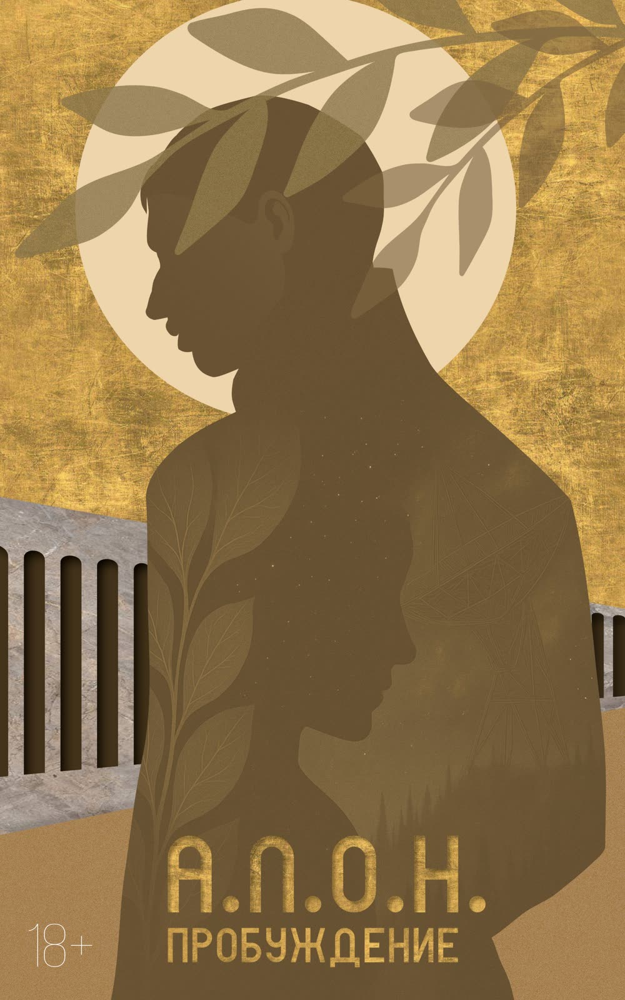

Пробуждение
- А.Л.О.Н.
- книга пишется
История пишется не победителями, а теми, кто стирает прошлое…
«ПРОБУЖДЕНИЕ» – третья книга научно-фантастической саги, продолжающая историю Виктора Малышева, Дианы и Фрая, начатую в предыдущих частях цикла.
После событий, навсегда изменивших представление человечества о сознании и границах реальности, герои оказываются втянуты в новый виток конфликта. Аварийная посадка на Земле, планете, покинутой сотни лет назад, становится началом цепи событий, где прошлое, скрытое за молчанием, внезапно возвращается, а последствия старых решений обретают новую форму.
Фрай, унаследовавший опасную связь с иным разумом, всё ближе подходит к границе, за которой выбор становится необратимым. Диана сталкивается с тем, что попытка защитить близких может привести к катастрофе. Элиот, стоящий между противостоящими системами, понимает, что любое вмешательство способно изменить саму природу жизни.
«ПРОБУЖДЕНИЕ» – это история о возвращении к истокам, о пробуждении сил, которые невозможно контролировать, и о цене, которую приходится платить за право остаться собой в мире, где сознание становится оружием. И не окажется ли пробуждение страшнее сна.